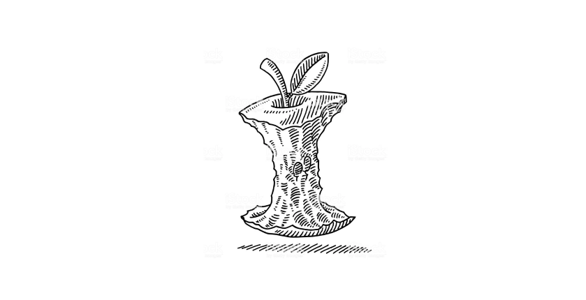

Социальный эксперимент.
Логотипы от народа.
Команда by-vershinin отправилась на улицы Санкт-Петербурга, что проверить, как хорошо люди помнят логотипы известных брендов.
Мы подходили к случайным прохожим и просили нарисовать по памяти логотипы: «Икеа» «эпл» «Майкрософт» «Старбакс» «теремок» и прочих.
Давали ровно 1 минуту, планшет и стилус. Результаты оказались довольно интересными.
Что происходит? Люди просто берут и рисуют все подряд, хотя мы просили нарисовать логотипы. Например в ответ на: «Нарисуйте, пожалуйста знак Apple», один из участников нарисовал только огрызок. Подумать только, он нарисовал откусанный кусок яблока, хотя именно его нет в логотипе…
Разумеется, это шутка ;)
Участники мини исследования справились с задачей лучше, чем мы ожидали. Лучше всего себя показали люди возраста от 35. И труднее было воспроизвести логотипы для молодых людей до 25.
Рейтинг самых запоминаемых логотипов по результатам нашего исследования следующие:
- Икеа
- Майкрософт
- Эпл
- Теремок
- Старбакс
- Додо пицца
Далее мы составили рейтинг самых запоминаемых образов.
Мы спрашивали что изображено на знаке данных компаний и фиксировали ответы.
Рейтинг запоминаемых образов:
- Apple - «Яблоко, ну огрызок точнее»
- Старбакс - «Русалка там зеленая»
Следующие новости:
Заголовок статьи 1
Заголовок статьи 2
Заголовок статьи 3